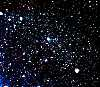

| مجرة القوس القزمة - Sagittarius Dwarf |
|---|
 |
تقع في الجانب البعيد من مجرتنا، اكتشفت حديثا في العام 1994. |
| مجرة الدب الأكبر II - Ursa Major II |
|---|
 |
اكتشفت هذه المجرة في العام 2006. و هي إحدى المجرات الأكثر خفوتا المعروفة، و هي خافتة بالمقدار الذي يصعب فيه ظهورها بالتصوير الفوتوغرافي العادي. |
| سحابة ماجلان الكبرى - Large Magellanic Cloud |
|---|
|
و هي المجرة التابعة الأكبر و كذلك هي رابع أكبر مجرة في مجموعة المجرات المحلية. تظهر في سماء القبة السماوية الجنوبية و تعتبر ألمع مجرة في السماء. تحوي عدة بلايين من النجوم و العديد منها في طور النشأة، حيث تشاهد بوضوح في سديم. Tarantula nebula,تجمعات مركزة من الغبار و الغازعلى امتداد 2000 سنة ضوئية و
قد تم رصد انفجار مستعر سوبرنوڤا
عام 1987 في سحابة ماجلان الكبرى وأظهرت عملية رصد البقايا المتمددة للمستعر معطيات دقيقة لقياس المسافة بدقة لهذه المجرة. |
| سحابة ماجلان الصغرى - Small Magellanic Cloud |
|---|
|
لا يدل الاسم تماما على طبيعتها، فهذه المجرة كبيرة بشكل كاف لتدخل في تصنيف المجرات القزمة. تحوي هذه السحابة على بضعة مئات الملايين من النجوم و من السهل رؤيتها في سماء القبة الجنوبية. و كما هو الحال في سحابة ماجلان الكبرى فإن الكثير من عمليات نشأة النجوم تحدث داخلها. |
| مجرة الراعي القزمة - Boötes Dwarf |
|---|
 |
اكتشفت هذه المجرة عام 2006. و هي أخفت المجرات المكتشفة على الإطلاق. لا تظهر هذه المجرة بالتصوير الفوتوغرافي العادي، و لكن يمكن رصدها من خلال عملية التعداد الدقيق للنجوم الخافتة في هذه البقعة من السماء. |
| مجرة الدب الأصغر القزمة - Ursa Minor Dwarf |
|---|
|  |
اكتشفت عام 1954، مجرة صغيرةجدا فعلى الرغم من كونها مجاورة لدرب التبانة، فإنها باهتة جدا لدرجة يصعب رؤيتها بأي معدات إلا إذا استخدمنا تلسكوبات قوية. يبلغ متوسط عمر النجوم فيها ما لا يقل عن 10 بليون عام ، و تعتبر المجرة صغيرة جدا مما يجعلها غير قادرة على البقاء و لا يبقى فيها من الغاز و الغبار ما يسمح بنشأة أي نجم جديد. |
| مجرة معمل النحات القزمة - Sculptor Dwarf |
|---|
 |
اكتشفها هارلو شيبلي Harlow Shapley عام 1937. يبلغ حجمها ضعف حجم مجرة الدب الأصغر و يبدو بأن جميع نجومها معمرة و كبيرة السن. |
| مجرة التنين القزمة - Draco Dwarf |
|---|
 |
اكتشفت بالتزامن مع اكتشاف مجرة الدب الأصغر عام 1954. و هي مجرة ذات حجم معقول و تتألف من نجوم هرمة قديمة. |
| مجرة آلة السدس القزمة - Sextans Dwarf |
|---|
|
اكتشفت عام 1989. و هل ذات لمعان منخفض منخفض جدا (ضيائية منخفضة) يبدو أنها أكبر من مجرة الدب الأصغر و التنين القزمنين. |
| مجرة الدب الأكبر I - Ursa Major I |
|---|
 |
اكتشفت هذه المجرة عام 2005. و هي من المجرات الاستثنائية الخافتة و ربما تشبه مجرة الراعي القزمة. |
| مجرة القاعدة القزمة - Carina Dwarf |
|---|
|
اكتشفت عام 1977, و هي مجرة صغيرة قزمة، و يضاف إلى ذلك أغلب نجومها أقل عمرا إذ تبلغ حوالي 7 بليون سنة
مقارنة بمثيلاتها من المجرات القزمة المحلية. |
| مجرة الكور القزمة - Fornax Dwarf |
|---|
 |
اكتشفت عام 1937 في نفس الوقت الذي اكتشفت فيه مجرة معمل النحات القزمة، و هي أكبر بمرات عديدة من أصغر مجرة قزمةو تحتوي عدة ملايين من النجوم.
تتراوح أعمار نجومها ما بين ثلاثة إلى عشرة بلايين سنة. كما تمتلك هذه المجرة ستة من العناقيد النجمية الكروية تدور حولها.
|